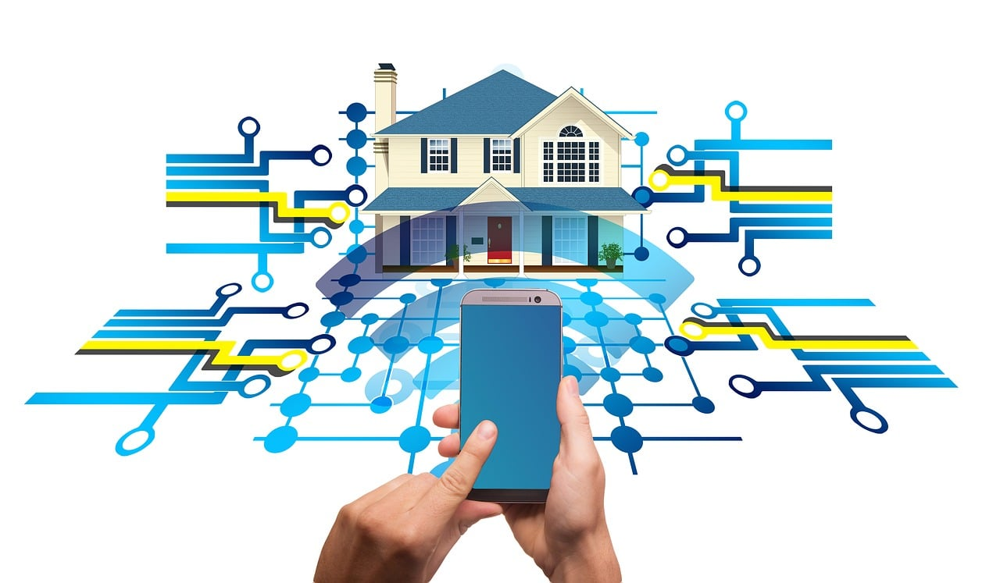

With Smart Home Security's Remote Access feature, you're always in control of your home's security, no matter where you are. Our advanced technology allows you to monitor and manage your security system remotely, providing peace of mind and convenience like never before.
Live Video Feeds: Access real-time video streams from your security cameras directly on your smartphone or computer.
Remote Arm/Disarm: Arm or disarm your security system remotely, allowing trusted individuals access to your home.
Customizable Alerts: Receive instant alerts and notifications about any suspicious activity or system events, ensuring you're always informed.
Convenience: Manage your security system from anywhere with an internet connection, ensuring your home is always secure.
Peace of Mind: Check in on your home anytime and from anywhere, knowing that everything is safe and sound.
Enhanced Security: Stay vigilant against potential threats and take action immediately when necessary, even when you're away.